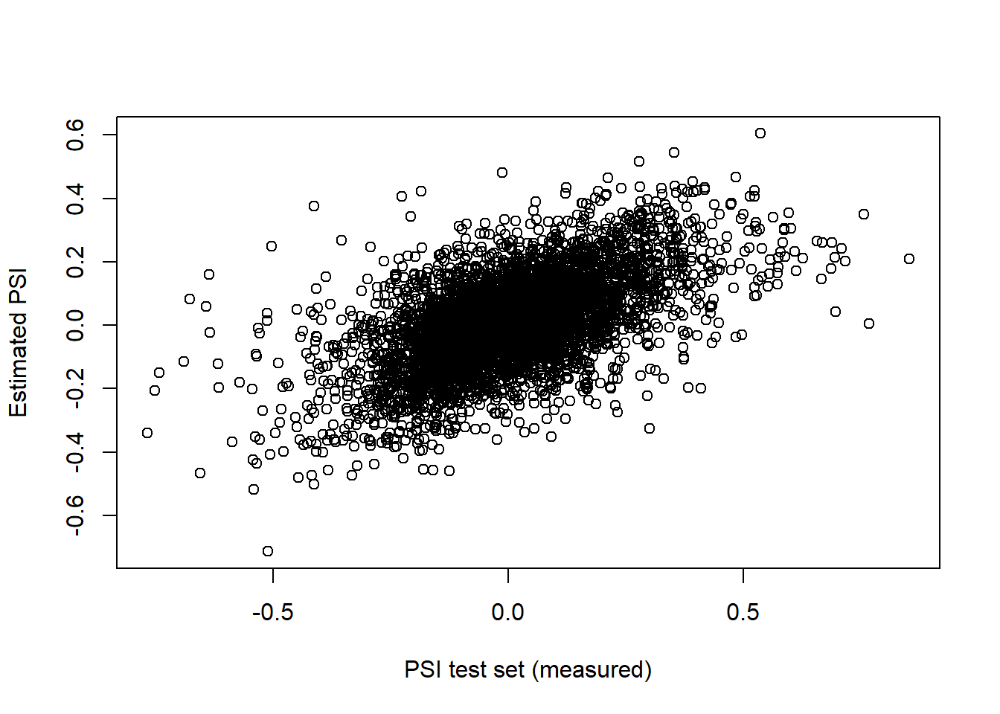
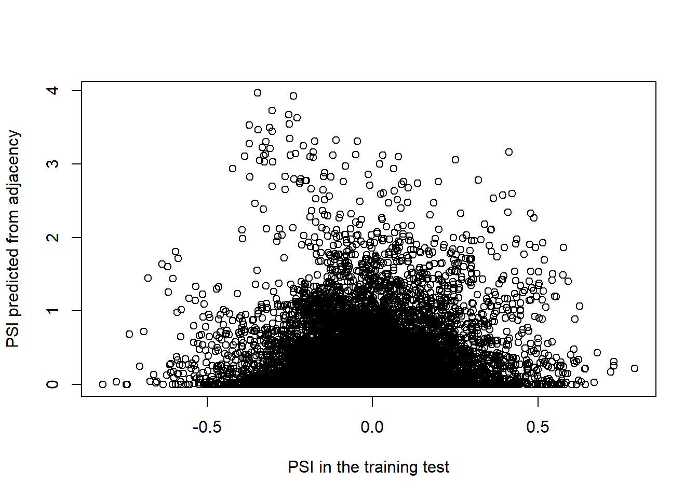
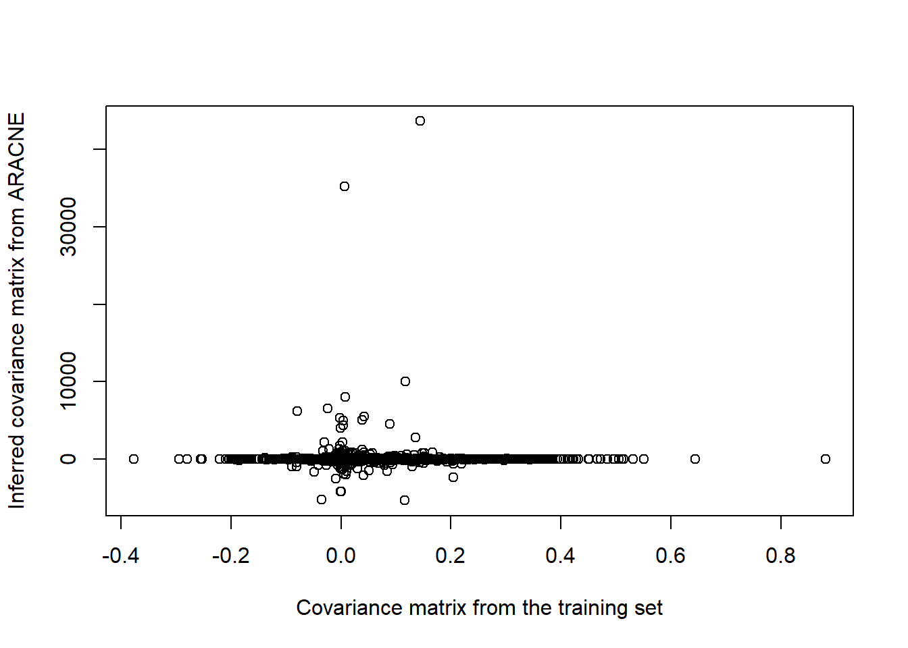
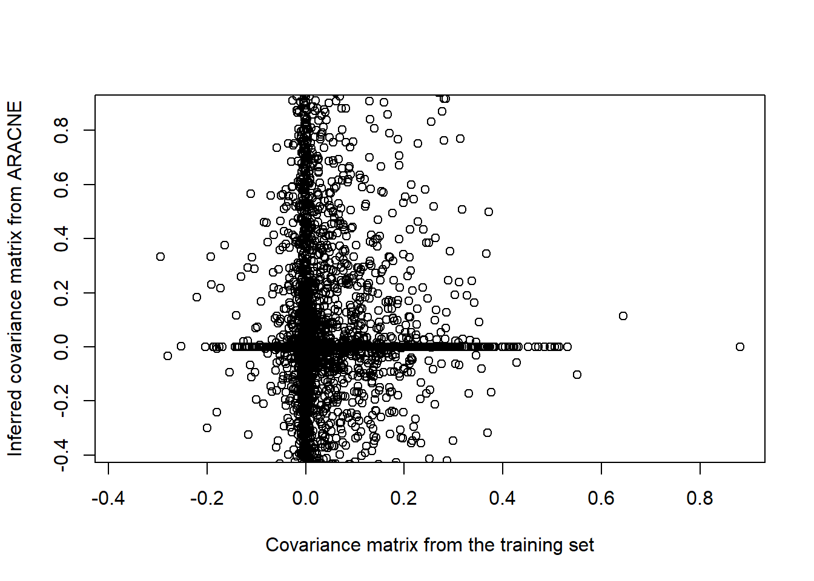
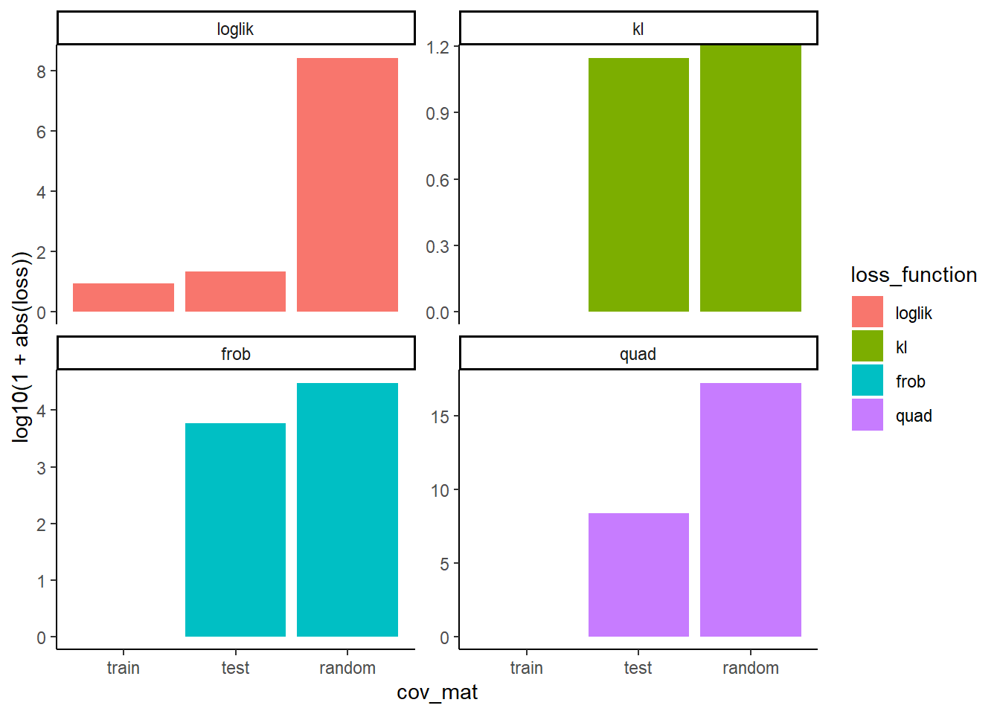
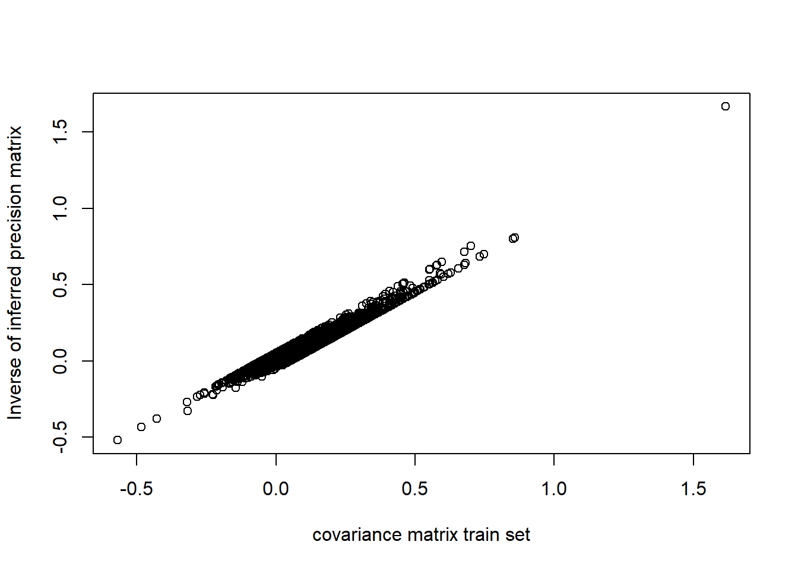
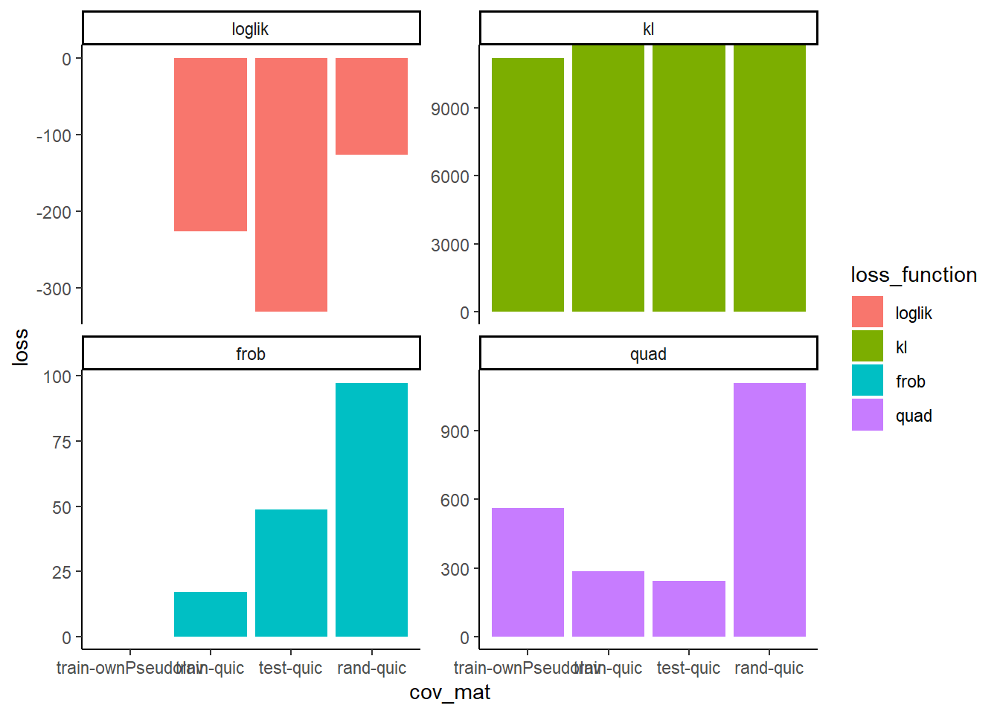
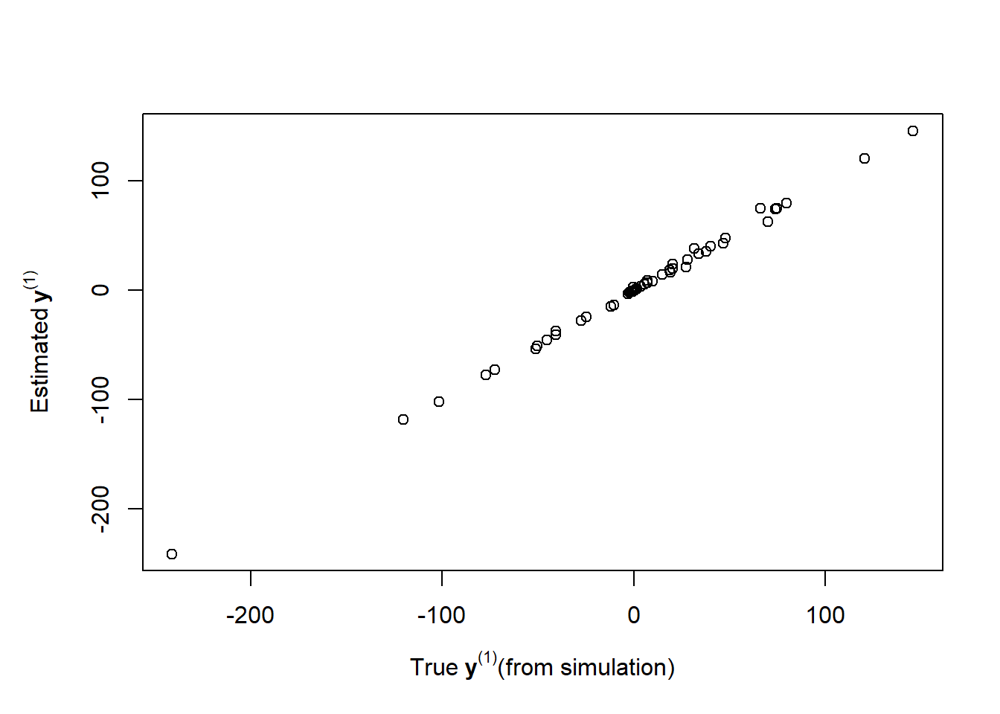
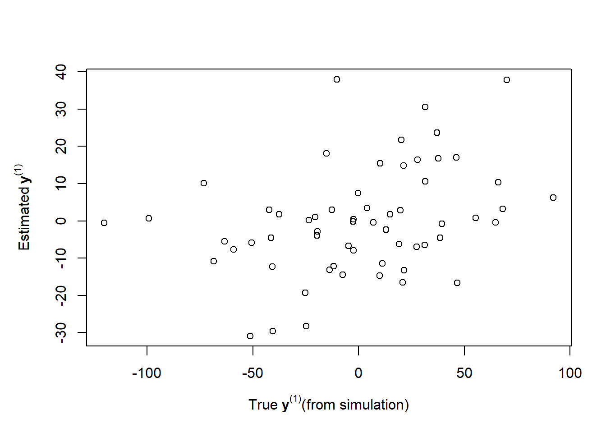
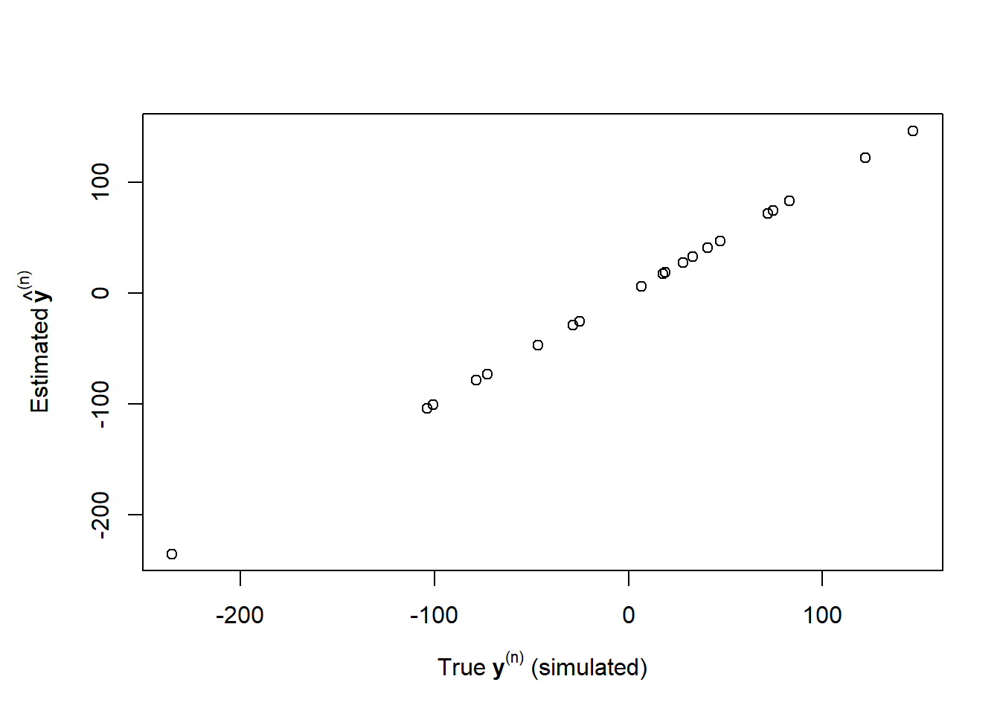

Graph Power Counter POC
Principle
We can use various methods to estimate (infer) the pecision matrix (the inverse of the covariance matrix) for a sample, and use it as a graph. To compare the methods, we want to use Cross-Validation: only include training samples to infer the precision matrix, use the test samples to verify its accuracy.
Dataset
We start with the real dataset, we have a set of 618 SF and a set of 129 PSI, both measured in 155 samples. We split these into train (108 samples) and test (47 samples).
We assemble them by column:
Code to load and prepare this data:
# Inits ----
suppressPackageStartupMessages(library(tidyverse))
quantifs_filtered <- qs::qread(here::here("data/intermediates/simultation/230206_preprocessed_quantifs_filtered.qs"))
sf_expression <- qs::qread(here::here("data/intermediates/simultation/230206_preprocessed_sf_expression.qs")) |>
filter(transcript_id != "R07E5.14.2")
# Prepare data ----
#~ PSI -----
mat_psi <- quantifs_filtered |>
mutate(dPSI = PSI - mean(PSI),
.by = event_id) |>
select(event_id, sample_id, dPSI) |>
pivot_wider(id_cols = sample_id, names_from = event_id, values_from = dPSI) |>
column_to_rownames("sample_id") |>
as.matrix()
# filter PSI
# remove samples full of NA
mat_psi <- mat_psi[rowMeans(is.na(mat_psi)) < .4, ]
# Train/test split: note we do that BEFORE imputation
set.seed(123)
train_samples <- sample(rownames(mat_psi), size = .7*nrow(mat_psi))
test_samples <- setdiff(rownames(mat_psi), train_samples)
mat_psi_train <- mat_psi[train_samples,]
# Impute the rest of the NAs
# note: Park, Wang and Lim (2020)
#https://arxiv.org/abs/2006.04632 try a few imputation methods,
# {impute} seems OK
mat_psi_train <- impute::impute.knn(mat_psi_train)$data
#~ SF TPM ----
mat_sf <- sf_expression |>
mutate(logTPM = log(TPM + 1)) |>
select(transcript_id, sample_id, logTPM) |>
pivot_wider(id_cols = sample_id,
names_from = "transcript_id",
values_from = "logTPM") |>
column_to_rownames("sample_id") |>
as.matrix()
mat_sf_train <- mat_sf[train_samples, ]
# match rows
stopifnot(all.equal(rownames(mat_psi_train), rownames(mat_sf_train)))
mat_train <- cbind(mat_sf_train, mat_psi_train)
# finish
nb_psi <- ncol(mat_psi_train)
nb_sf <- ncol(mat_sf_train)
mat_test <- cbind(mat_sf[test_samples,], mat_psi[test_samples, ])
mat_sf_test <- mat_test[,1:nb_sf]
mat_psi_test <- mat_test[,(nb_sf+1):(nb_sf+nb_psi)]Using direct inversion
If we just want to predict the PSI in the test set from the SF in the test set and a relationship learned from the training set, there is a direct way, calling \(P\) the matrix of PSI, \(F\) the matrix of SF, and \(C\) the relationship:
\[ {P} = {F} {C} \] \[ P = F^{-1} C\]
So we can simply estimate \(C\) on the training set. One problem is that the SF matrix is typically non invertible (since it’s not square), we use the Moore-Penrose inverse:
mat_sf_train_inv <- corpcor::pseudoinverse(mat_sf_train)
C <- mat_sf_train_inv %*% mat_psi_train
est_psi_test <- mat_sf[test_samples,] %*% C
plot(mat_psi_test, est_psi_test,
xlab = "PSI test set (measured)",
ylab = "Estimated PSI")
So we get a pretty good prediction, the data does contain learnable structure.
Precision matrix
The approach used previously was, using the training set, estimate the precision matrix, extract the corner \(\Omega\) of that matrix that describes relationship between SF and PSI, then use: \[P_{predicted} = F_{test} \Omega \]
Then we compare \(P_{predicted}\) to \(P_{test}\). This does not work, for example we can’t even predict the training set!
mim <- minet::build.mim(mat_train)
arac <- minet::aracne(mim)
# extract adjacency matrix
adj <- arac[(nb_sf + 1):(nb_sf + nb_psi), 1:nb_sf]
# re-predict the training set
predicted_psi_train <- mat_sf_train %*% t(adj)
plot(mat_psi_train, predicted_psi_train,
xlab = "PSI in the training test",
ylab = "PSI predicted from adjacency")
So this simplistic formula is wrong.
Approaches in the literature
It’s unclear to me whether we can get signal from precision matrix (see e.g. this, to me no one cares or gives guarantees about the values of matrix coefficients, only about their sparsity).
Looking through the literature, we can see a few (not many) efforts to use Cross-Validation in the context of Precision matrix inference. The older version that is being cited regularly is Bickel and Levina, 2008, “Regularized estimation of large covariance matrices” (note there is another Bickel and Levina 2008), in particular their equation (22) in section 5 (p 211).
More recently, Tong et al., 2019 propose two methods that I’ve been trying to adapt, that they call in their paper CV-I and CV-II.
Bickel and Levina
They define the risk (loss function) for parameter \(k\):
\[ R(k) = |\hat{\Sigma}_k - \Sigma |_{(1,1)} \]
We propose a resampling scheme to estimate the risk and thus \(k_0\) : divide the original sample into two samples at random and use the sample covariance matrix of one sample as the “target” to choose the best k for the other sample. Let \(n_1, n_2 = n − n_1\) be the two sample sizes for the random split, and let \(\hat{\Sigma}_1^\nu\), \(\hat{\Sigma}_2^\nu\) be the two sample covariance matrices from the νth split, for \(ν = 1,... , N\). Alternatively, N random splits could be replaced by K-fold cross-validation. Then the risk can be estimated by:
\[ \hat{R}(k) = \frac{1}{N} \sum_{\nu=1}^N ||B_k(\hat{\Sigma}_1^{(\nu)}) - \hat{\Sigma}_2^{(\nu)}||_{(1,1)} \tag{24}\]
where \(B_k()\) is their regularization method (banding).
It may be surprising that using the sample covariance \(\hat{\Sigma}_2\) as the target in (24) works at all, since it is known to be a very noisy estimate of \(\Sigma\). It is, however, an unbiased estimate, and we found that even though (24) tends to overestimate the actual value of the risk, it gives very good results for choosing k.
In other words, they directly compare the covariance matrix inferred from the training to that computed in the test set. I haven’t attempted this method and adapting it to precision matrix inference.
Here is a quick test:
mim <- minet::build.mim(mat_train)
arac <- minet::aracne(mim)
# our inferred precision matrix
dim(arac)[1] 747 747# rebuild the inferred covariance matrix
S_train_inferred <- corpcor::pseudoinverse(arac)
S_train_data <- cov(mat_train)
# subsample for faster plotting
srows <- sample(nrow(S_train_inferred), 100)
scols <- sample(ncol(S_train_inferred), 100)
plot(S_train_data[srows,scols], S_train_inferred[srows,scols],
xlab = "Covariance matrix from the training set",
ylab = "Inferred covariance matrix from ARACNE")
# same forcing identical axes
plot(S_train_data[srows,scols], S_train_inferred[srows,scols],
xlab = "Covariance matrix from the training set",
ylab = "Inferred covariance matrix from ARACNE",
ylim = range(S_train_data[srows,scols]))
Doesn’t seem to work extremely well, would need more work.
The skggm methods
The Python package skggm provides tools for estimating GGMs (similar to QUIC), and has a good overview. Following Bickel and Levina (2008), it offers several CV methods comparing the \(\Sigma\) reconstructed from the estimated \(\Omega\), all aim to estimate the loss \(d(\hat{\Sigma}^{ts}, \hat{\Omega}^{tr})\):
\[ -tr(\hat{\Sigma}^{ts} \cdot \hat{\Omega}^{tr}) + log ~ det \hat{\Omega}^{tr} - p \cdot log 2\pi \tag{log-likelihood} \]
\[ \frac{1}{2}\left( tr(\hat{\Sigma}^{ts} \cdot \hat{\Omega}^{tr}) - log ~ det (\hat{\Sigma}^{ts} \cdot \hat{\Omega}^{tr}) -p \right) \tag{KL-loss}\]
\[ \sum_{ij} \left( \hat{\Sigma}^{ts} - \hat{\Sigma}^{tr}_{smle} \right)^2 \tag{Frobenius}\]
\[ tr(\hat{\Sigma}^{ts} \cdot \hat{\Omega}^{tr} - I_p)^2 \tag{quadratic} \]
Let’s reimplement these loss functions (note, using the source Python code as reference, e.g. they take full sum instead of trace):
logdet <- function(x){
dt <- determinant(x, logarithm = TRUE)
if(dt$sign != 1) return(-Inf)
dt$modulus |> as.numeric()
}
loss_loglik <- function(Sts, OMtr){
stopifnot(all(nrow(Sts) == nrow(OMtr),
nrow(Sts) == ncol(OMtr),
ncol(Sts) == nrow(Sts)))
loglik <- -sum(Sts * OMtr) + logdet(OMtr) - nrow(Sts)*log(2*pi)
loglik/2
}
loss_kl <- function(Sts, OMtr){
stopifnot(all(nrow(Sts) == nrow(OMtr),
nrow(Sts) == ncol(OMtr),
ncol(Sts) == nrow(Sts)))
0.5 * (sum(Sts * OMtr) - logdet(Sts %*% OMtr) - nrow(Sts))
}
loss_frob <- function(Sts, Str){
stopifnot(all(nrow(Sts) == nrow(Str),
nrow(Sts) == ncol(Str),
ncol(Sts) == nrow(Sts)))
norm(Sts - Str, type = "F")
}
loss_quad <- function(Sts, OMtr){
stopifnot(all(nrow(Sts) == nrow(OMtr),
nrow(Sts) == ncol(OMtr),
ncol(Sts) == nrow(Sts)))
sum(diag( ( Sts %*% OMtr - diag(nrow(Sts)) )^2 ))
}skggm CV on made-up signal
# test on made-up signal
Y_tib <- tibble(y1 = rnorm(20, sd = 50),
y2 = 2*y1 + rnorm(20, sd = 10),
y3 = y1*rnorm(20, sd = 0.05),
y4 = y1/y2+y3,
y5 = y2+y3 + rnorm(20, sd = .01)) |>
scale(center = TRUE, scale = FALSE)
Y <- as.matrix(Y_tib)
Ytr <- Y[1:10, ]
Yts <- Y[11:20, ]
Str <- cov(Ytr)
Sts <- cov(Yts)
OMtr <- solve(Str)
# randomized
Srd <- Sts
Srd[] <- sample(Sts)
all_loss <- tibble(cov_mat = c("train", "test", "random") |> rep(each = 4) |> fct_inorder(),
loss_function = c("loglik", "kl", "frob", "quad") |> rep(times = 3) |> fct_inorder(),
loss = c(loss_loglik(Str, OMtr),
loss_kl(Str, OMtr),
loss_frob(Str, Str),
loss_quad(Str, OMtr),
loss_loglik(Sts, OMtr),
loss_kl(Sts, OMtr),
loss_frob(Sts, Str),
loss_quad(Sts, OMtr),
loss_loglik(Srd, OMtr),
loss_kl(Srd, OMtr),
loss_frob(Srd, Str),
loss_quad(Srd, OMtr)))
all_loss# A tibble: 12 × 3
cov_mat loss_function loss
<fct> <fct> <dbl>
1 train loglik -7.76e+ 0
2 train kl 8.86e- 9
3 train frob 0
4 train quad 8.88e-16
5 test loglik -2.14e+ 1
6 test kl 1.30e+ 1
7 test frob 5.88e+ 3
8 test quad 2.46e+ 8
9 random loglik -2.74e+ 8
10 random kl Inf
11 random frob 3.03e+ 4
12 random quad 1.86e+17all_loss |>
ggplot() +
theme_classic() +
geom_col(aes(x = cov_mat, y = log10(1+abs(loss)), fill = loss_function)) +
facet_wrap(~loss_function, scales = "free_y")
skggm CV on real signal
Note also that QUIC, the R package I’ve used previously and that inspired skggm, does return the inverse of \(\hat{\Omega}\) (called W), so we can use it directly. We can try and test these approaches:
# arbitrarily chosen regularization parameter
r_gg <- r_gs <- r_ss <- .05
regul_mat <- rbind(cbind(matrix(r_gg, nrow=nb_sf, ncol = nb_sf),
matrix(r_gs, nrow=nb_sf, ncol = nb_psi)),
cbind(matrix(r_gs, nrow=nb_psi, ncol = nb_sf),
matrix(r_ss, nrow=nb_psi, ncol = nb_psi)))
S_train <- cov(mat_train)
quic <- QUIC::QUIC(S_train, rho = regul_mat)Running QUIC version 1.1 in 'default' mode.
QUIC CPU time: 38.934 seconds# subsample for faster plotting
srows <- sample(nrow(S_train), 100)
scols <- sample(ncol(S_train), 100)
plot(S_train[srows, scols], quic$W[srows, scols],
xlab = "covariance matrix train set",
ylab = "Inverse of inferred precision matrix")
And if we try and compare to the covariance matrix on the test set, using the quadratic loss defined above:
mat_test_imp <- impute::impute.knn(mat_test)$data
S_test <- cov(mat_test_imp)
# randomized
S_rand <- S_test
S_rand[] <- sample(S_rand)
pseudoinv <- corpcor::pseudoinverse(S_train)
all_loss <- tibble(cov_mat = c("train-ownPseudoInv", "train-quic", "test-quic", "rand-quic") |> rep(each = 4) |> fct_inorder(),
loss_function = c("loglik", "kl", "frob", "quad") |> rep(times = 4) |> fct_inorder(),
loss = c(loss_loglik(S_train, pseudoinv),
loss_kl(S_train, pseudoinv),
loss_frob(S_train, corpcor::pseudoinverse(pseudoinv)),
loss_quad(S_train, pseudoinv),
loss_loglik(S_train, quic$X),
loss_kl(S_train, quic$X),
loss_frob(S_train, quic$W),
loss_quad(S_train, quic$X),
loss_loglik(S_test, quic$X),
loss_kl(S_test, quic$X),
loss_frob(S_test, quic$W),
loss_quad(S_test, quic$X),
loss_loglik(S_rand, quic$X),
loss_kl(S_rand, quic$X),
loss_frob(S_rand, quic$W),
loss_quad(S_rand, quic$X)))
all_loss# A tibble: 16 × 3
cov_mat loss_function loss
<fct> <fct> <dbl>
1 train-ownPseudoInv loglik -Inf
2 train-ownPseudoInv kl 1.12e+ 4
3 train-ownPseudoInv frob 8.79e-12
4 train-ownPseudoInv quad 5.62e+ 2
5 train-quic loglik -2.26e+ 2
6 train-quic kl Inf
7 train-quic frob 1.71e+ 1
8 train-quic quad 2.87e+ 2
9 test-quic loglik -3.32e+ 2
10 test-quic kl Inf
11 test-quic frob 4.87e+ 1
12 test-quic quad 2.44e+ 2
13 rand-quic loglik -1.27e+ 2
14 rand-quic kl Inf
15 rand-quic frob 9.72e+ 1
16 rand-quic quad 1.11e+ 3all_loss |>
ggplot() +
theme_classic() +
geom_col(aes(x = cov_mat, y = loss, fill = loss_function)) +
facet_wrap(~loss_function, scales = "free_y")Warning: Removed 1 rows containing missing values (`geom_col()`).
Tong et al. notations
Consider an N -dimensional signal y with mean zero, covariance matrix \(Σ\) and precision matrix \(Ω≜Σ−1\) . Suppose we have \(T\) independent and identically distributed training samples and let \(y_t\) be the \(t\)-th sample. The SCM is computed as
\[ \widehat {\boldsymbol \Sigma } = \frac {1}{T} \sum _{t=1}^{T} \mathbf y_{t} \mathbf y_{t}^\dagger \tag{1}\]
so they take the matrix with N rows corresponding to the N signal components, and T columns corresponding to samples in space and/or time.
In section B, they assume an auto-regressive model, which I think is only used for simulations within that section. For here, I use an artificial signal, with row mean at 0:
suppressPackageStartupMessages(library(tidyverse))
set.seed(1)
# create some data
Y_tib <- tibble(y1 = rnorm(20, sd = 50),
y2 = 2*y1 + rnorm(20, sd = 10),
y3 = y1*rnorm(20, sd = 0.05),
y4 = y1/y2+y3,
y5 = y2+y3 + rnorm(20, sd = .01)) |>
scale(center = TRUE, scale = FALSE)
Y <- t(as.matrix(Y_tib))
T <- ncol(Y)
N <- nrow(Y)
dim(Y)[1] 5 20# first few columns
Y[, 1:4] [,1] [,2] [,3] [,4]
y1 -40.8488843 -0.3440276 -51.307624 70.237846
y2 -72.4432798 7.1980230 -101.804884 120.646891
y3 -0.3311812 -0.7051678 -2.044854 1.631238
y4 -0.2233240 -0.8326118 -2.018452 1.724372
y5 -72.7514622 6.4914455 -103.843857 122.277391We can recompute \(\Sigma\) with the same definition as them (eq 1):
Spart <- list()
for(t in 1:T){
Spart[[t]] <- Y[,t,drop=FALSE] %*% t(Y[,t,drop=FALSE])
}
S <- reduce(Spart, `+`)/T
S y1 y2 y3 y4 y5
y1 1980.82685 3879.43053 -15.218482 -14.890729 3864.14263
y2 3879.43053 7666.54607 -35.294628 -34.846437 7631.12807
y3 -15.21848 -35.29463 3.554022 3.593051 -31.74609
y4 -14.89073 -34.84644 3.593051 3.644750 -31.25854
y5 3864.14263 7631.12807 -31.746094 -31.258538 7599.25322# similar result as R's built-in
all.equal(S,
cov(Y_tib)*(T-1)/T)[1] TRUETong et al. CV-I
First, we partition the entries into two subsets:
\[ \mathbf y = \left [{ \begin{array}{c} \mathbf y^{(1) } \\ \mathbf y^{(2) } \end{array} }\right] \tag{8} \]
where the lengths of \(y^{(1)}\) and \(y^{(2)}\) are \(N_1\) and \(N_2\) , respectively. Accordingly, let us partition the covariance matrice of y as
\[\boldsymbol \Sigma = \left [{ \begin{array}{cc} \boldsymbol \Sigma _{11} &\quad \boldsymbol \Sigma _{12} \\ \boldsymbol \Sigma _{21} &\quad \boldsymbol \Sigma _{22} \\ \end{array} }\right],\tag{9} \]
We can use such a partitioning:
N1 <- 3
N2 <- 2
Yp1 <- Y[1:3,]
Yp2 <- Y[4:5,]
Yp1[,1:4] [,1] [,2] [,3] [,4]
y1 -40.8488843 -0.3440276 -51.307624 70.237846
y2 -72.4432798 7.1980230 -101.804884 120.646891
y3 -0.3311812 -0.7051678 -2.044854 1.631238And we can recompute each of the components in eq (9):
# Partial covariance matrices
Spart11 <- list()
for(t in 1:T){
Spart11[[t]] <- Yp1[,t,drop=FALSE] %*% t(Yp1[,t,drop=FALSE])
}
S11 <- reduce(Spart11, `+`)/T
Spart22 <- list()
for(t in 1:T){
Spart22[[t]] <- Yp2[,t,drop=FALSE] %*% t(Yp2[,t,drop=FALSE])
}
S22 <- reduce(Spart22, `+`)/T
Spart12 <- list()
for(t in 1:T){
Spart12[[t]] <- Yp1[,t,drop=FALSE] %*% t(Yp2[,t,drop=FALSE])
}
S12 <- reduce(Spart12, `+`)/T
Spart21 <- list()
for(t in 1:T){
Spart21[[t]] <- Yp2[,t,drop=FALSE] %*% t(Yp1[,t,drop=FALSE])
}
S21 <- reduce(Spart21, `+`)/T
S11 y1 y2 y3
y1 1980.82685 3879.43053 -15.218482
y2 3879.43053 7666.54607 -35.294628
y3 -15.21848 -35.29463 3.554022S12 y4 y5
y1 -14.890729 3864.14263
y2 -34.846437 7631.12807
y3 3.593051 -31.74609S21 y1 y2 y3
y4 -14.89073 -34.84644 3.593051
y5 3864.14263 7631.12807 -31.746094S22 y4 y5
y4 3.64475 -31.25854
y5 -31.25854 7599.25322S y1 y2 y3 y4 y5
y1 1980.82685 3879.43053 -15.218482 -14.890729 3864.14263
y2 3879.43053 7666.54607 -35.294628 -34.846437 7631.12807
y3 -15.21848 -35.29463 3.554022 3.593051 -31.74609
y4 -14.89073 -34.84644 3.593051 3.644750 -31.25854
y5 3864.14263 7631.12807 -31.746094 -31.258538 7599.25322rbind(
cbind(S11, S12),
cbind(S21, S22)
) |>
all.equal(S)[1] TRUEThen they also define the precision matrix in components:
\[ \boldsymbol \Omega \triangleq \boldsymbol \Sigma ^{-1} = \left [{ \begin{array}{cc} \boldsymbol \Omega _{11} &\quad \boldsymbol \Omega _{12} \\ \boldsymbol \Omega _{21} &\quad \boldsymbol \Omega _{22} \\ \end{array} }\right] \tag{10} \]
From the matrix inversion lemma, it can be shown that
\[ \boldsymbol \Omega _{21}= -\boldsymbol \Sigma _{22}^{-1}\boldsymbol \Sigma _{21} (\boldsymbol \Sigma _{11} - \boldsymbol \Sigma _{12} \boldsymbol \Sigma _{22}^{-1} \boldsymbol \Sigma _{21})^{-1} \tag{11} \] \[ \boldsymbol \Omega _{11}= (\boldsymbol \Sigma _{11} - \boldsymbol \Sigma _{12} \boldsymbol \Sigma _{22}^{-1} \boldsymbol \Sigma _{21})^{-1} \tag{12} \]
We can check that taking the exact inverse of \(\Sigma\) to get \(\Omega\), or recomputing the components of \(\Omega\) using eq 11 and 12 do give the same result:
OM <- solve(S)
OM21 <- -solve(S22) %*% S21 %*% solve(S11 - S12 %*% solve(S22) %*% S21)
OM11 <- solve(S11 - S12 %*% solve(S22) %*% S21)
OM y1 y2 y3 y4 y5
y1 0.06653668 -4.008018 -3.49857 -0.5141868 3.974265
y2 -4.00801759 13115.829117 12615.09982 473.0320096 -13114.159355
y3 -3.49857033 12615.099818 12220.03967 369.6404738 -12613.664473
y4 -0.51418684 473.032010 369.64047 101.4792132 -472.793065
y5 3.97426547 -13114.159355 -12613.66447 -472.7930648 13112.506863OM21 y1 y2 y3
y4 -0.5141868 473.032 369.6405
y5 3.9742654 -13114.159 -12613.6643OM11 y1 y2 y3
y1 0.06653668 -4.008018 -3.49857
y2 -4.00801752 13115.828899 12615.09961
y3 -3.49857027 12615.099608 12220.03947rbind(
cbind(OM11, t(OM21)),
cbind(OM21, matrix(0,nrow(OM21),nrow(OM21)))
) |>
(\(.x) abs(.x - OM) <= 1e-3)() y1 y2 y3 y4 y5
y1 TRUE TRUE TRUE TRUE TRUE
y2 TRUE TRUE TRUE TRUE TRUE
y3 TRUE TRUE TRUE TRUE TRUE
y4 TRUE TRUE TRUE FALSE FALSE
y5 TRUE TRUE TRUE FALSE FALSETherefore, from the submatrices \(Ω_{11}\) and \(Ω_{21}\) of the precision matrix \(Ω\), we can construct an \(N_2×N_1\) matrix
\[ \mathbf W \triangleq - \boldsymbol \Omega _{21} \boldsymbol \Omega _{11}^{-1} = \boldsymbol \Sigma _{22}^{-1}\boldsymbol \Sigma _{21} \tag{13} \]
we can compute \(W\) and check that the two formulations are equivalent:
W <- - OM21 %*% solve(OM11)
W_alternative <- solve(S22) %*% S21
all.equal(W, W_alternative)[1] TRUEW y1 y2 y3
y4 0.2855147 -0.9831105 0.9847263605
y5 0.5096642 1.0001506 -0.0001269845It can be easily seen that \(W\) is the matrix of coefficients for regressing \(y^{(1)}\) on \(y^{(2)}\) and is the linear minimum mean squared error (LMMSE) estimator for estimating \(y^{(1)}\) from \(y^{(2)}\) .
The above interpretation links the precision matrix to regression analysis of the data. This has been exploited for deriving regularized precision matrix estimates [25]. […] In this work, we exploit the above regression interpretation for another purpose, i.e., for determining the bandwidth for the regularized precision matrix estimation. The rationale is that, if we have a better estimate \(\hat{\Omega}\) of the true precision matrix \(Ω\) , then from it a linear predictor constructed as (13) (with \(Ω\) replaced by \(\hat{Ω}\)) should lead to a smaller error \(ξ_1\) of predicting \(y^{(1)}\) from \(y^{(2)}\) , where
\[ \boldsymbol \xi _{1} \triangleq \mathbf y^{(1) } - \mathbf W^\dagger \mathbf y^{(2) } \tag{14} \]
is obtainable from the training data and the estimate \(\hat{\Omega}\) of the precision matrix.
So from my reading, \(W\) is a matrix that transforms \(y^{(2)}\) into \(y^{(1)}\):
estimated_Yp1 <- t(W) %*% Yp2
par(mar = c(5,5,4,2))
plot(Yp1, estimated_Yp1,
xlab = expression("True "*bold(y)^"(1)"*"(from simulation)"),
ylab = expression("Estimated "*bold(y)^"(1)"))
Important note (and this was my initial mistake) that this only works for a signal that contains structure! Here, same code changing just the initial matrix:
rm(list = ls())
suppressPackageStartupMessages(library(tidyverse))
set.seed(1)
# create some fully random data
Y_tib <- tibble(y1 = rnorm(20, sd = 50),
y2 = rnorm(20, sd = 50),
y3 = rnorm(20, sd = 50),
y4 = rnorm(20, sd = 50),
y5 = rnorm(20, sd = 50)) |>
scale(center = TRUE, scale = FALSE)
# the rest is as above
Y <- t(as.matrix(Y_tib))
T <- ncol(Y)
N <- nrow(Y)
# Covariance matrix ----
Spart <- list()
for(t in 1:T){
Spart[[t]] <- Y[,t,drop=FALSE] %*% t(Y[,t,drop=FALSE])
}
S <- reduce(Spart, `+`)/T
Yp1 <- Y[1:3,]
Yp2 <- Y[4:5,]
# Partial covariance matrices
Spart11 <- list()
for(t in 1:T){
Spart11[[t]] <- Yp1[,t,drop=FALSE] %*% t(Yp1[,t,drop=FALSE])
}
S11 <- reduce(Spart11, `+`)/T
Spart22 <- list()
for(t in 1:T){
Spart22[[t]] <- Yp2[,t,drop=FALSE] %*% t(Yp2[,t,drop=FALSE])
}
S22 <- reduce(Spart22, `+`)/T
Spart12 <- list()
for(t in 1:T){
Spart12[[t]] <- Yp1[,t,drop=FALSE] %*% t(Yp2[,t,drop=FALSE])
}
S12 <- reduce(Spart12, `+`)/T
Spart21 <- list()
for(t in 1:T){
Spart21[[t]] <- Yp2[,t,drop=FALSE] %*% t(Yp1[,t,drop=FALSE])
}
S21 <- reduce(Spart21, `+`)/T
OM <- solve(S)
OM21 <- -solve(S22) %*% S21 %*% solve(S11 - S12 %*% solve(S22) %*% S21)
OM11 <- solve(S11 - S12 %*% solve(S22) %*% S21)
W <- - OM21 %*% solve(OM11)
estimated_Yp1 <- t(W) %*% Yp2
par(mar = c(5,5,4,2))
plot(Yp1, estimated_Yp1,
xlab = expression("True "*bold(y)^"(1)"*"(from simulation)"),
ylab = expression("Estimated "*bold(y)^"(1)"))
Tong et al., CV-II
In the same paper, they propose another approach to CV.
The second type of regression-based CV scheme (CV-II) uses the modified Cholesky factor of the precision matrix as described below. For an arbitrary positive-definite precision matrix \(Ω\), the modified Cholesky factorization can be written as \[ \boldsymbol \Omega = \mathbf T^\dagger \mathbf D^{-1} \mathbf T \tag{26} \]
where \(D\) is a diagonal matrix with positive diagonal entries, the modified Cholesky factor \(T\) is a lower triangular matrix with unit diagonal entries as follows \[ \mathbf T = \left [{ \begin{array}{ccccc} 1 &\quad &\quad && \\ -\phi _{21} &\quad 1 &\quad &\quad &\quad \\ -\phi _{31} &\quad -\phi _{32} &\quad 1 &\quad &\quad \\ \vdots &\quad \vdots &\quad \ddots &\quad \ddots &\quad \\ -\phi _{N1} &\quad -\phi _{N2} &\quad \cdots &\quad -\phi _{N,N-1} &\quad 1 \end{array} }\right] \tag{27} \]
The coefficients \({\phi_{nm}}\) have a regression interpretation [29], [25]: The LMMSE estimate of the \(n\)-th entry \(y^{(n)}\) of the signal y from its precedents \(y^{(1)},y^{(2)},⋯,y^{(n−1)}\) in \(y\) can be computed as \[ \widehat {y}^{(n)} = \sum _{m=1}^{n-1} \phi _{n,m} y^{(m)}, \quad n=2, 3, \cdots, N \tag{28} \]
Furthermore, the mean squared error (MSE) of this estimator is equal to the \(n\)-th diagonal entry of \(D\) , i.e., \[ { \mathbf D}_{n, n} =\mathrm {E}[|y^{(n)} - \widehat {y}^{(n)} |^{2}], \quad n=1, 2, \cdots, N \tag{29} \] where we defined \(y^{(1)}=0\) .
So, I can try using the same type of simulated signal as above:
rm(list = ls())
suppressPackageStartupMessages(library(tidyverse))
set.seed(1)
# create some data
Y_tib <- tibble(y1 = rnorm(20, sd = 50),
y2 = 2*y1 + rnorm(20, sd = 10),
y3 = y1*rnorm(20, sd = 0.05),
y4 = y1/y2+y3,
y5 = y2+y3 + rnorm(20, sd = .01)) |>
scale(center = TRUE, scale = FALSE)
Y <- t(as.matrix(Y_tib))
T <- ncol(Y)
N <- nrow(Y)
dim(Y)[1] 5 20# first few columns
Y[, 1:4] [,1] [,2] [,3] [,4]
y1 -40.8488843 -0.3440276 -51.307624 70.237846
y2 -72.4432798 7.1980230 -101.804884 120.646891
y3 -0.3311812 -0.7051678 -2.044854 1.631238
y4 -0.2233240 -0.8326118 -2.018452 1.724372
y5 -72.7514622 6.4914455 -103.843857 122.277391We need to estimate \(T\) and \(D\), with the help of Wikipedia and a helpful Stack Overflow answer, I could write this function (that uses the R built-in Cholesky decomposition):
perdiag <- function(nrow){
K <- matrix(0L, nrow = nrow, ncol = nrow)
for(i in 1:nrow){
K[i,(nrow-i+1)] <- 1L
}
K
}
modif_chol <- function(M){
K <- perdiag(nrow(M))
C <- t(chol(K %*% M %*% K))
stopifnot(all.equal(K %*% M %*% K,
C %*% t(C)))
S <- matrix(0,nrow(M),ncol(M)); diag(S) <- diag(C)
L <- C %*% solve(S)
D0 <- S^2
stopifnot(all.equal(K %*% M %*% K,
L %*% D0 %*% t(L)))
# get to the same form as paper
T <- t(K %*% L %*% K)
D <- matrix(0,nrow(D0),ncol(D0)); diag(D) <- 1/rev(diag(D0))
stopifnot(all.equal(M,
t(T) %*% solve(D) %*% T,
check.attributes = FALSE))
list(T = T, D = D)
}We can proceed as previously, compute \(\Sigma\), take its inverse \(\Omega\), decompose it into \(T\) and \(D\):
# Covariance matrix ----
Spart <- list()
for(t in 1:T){
Spart[[t]] <- Y[,t,drop=FALSE] %*% t(Y[,t,drop=FALSE])
}
S <- reduce(Spart, `+`)/T
OM <- solve(S)
ch <- modif_chol(OM)
mat_T <- ch$T
mat_D <- ch$D
mat_T [,1] [,2] [,3] [,4] [,5]
[1,] 1.0000000000 0.000000000 0.0000000 0.00000000 0
[2,] -1.9584904890 1.000000000 0.0000000 0.00000000 0
[3,] -0.1487658302 0.079882300 1.0000000 0.00000000 0
[4,] -0.0043927501 0.002124333 -1.0086949 1.00000000 0
[5,] 0.0003030897 -1.000126024 -0.9619567 -0.03605665 1mat_D [,1] [,2] [,3] [,4] [,5]
[1,] 1980.828 0.00000 0.000000 0.00000000 0.000000e+00
[2,] 0.000 68.71831 0.000000 0.00000000 0.000000e+00
[3,] 0.000 0.00000 2.998596 0.00000000 0.000000e+00
[4,] 0.000 0.00000 0.000000 0.01184387 0.000000e+00
[5,] 0.000 0.00000 0.000000 0.00000000 7.626307e-05Now that we have \(T\), we can rebuild \(y^{(n)}\) from its precedents:
n <- 5
yn_partial <- list()
for(m in setdiff(1:N, n)){
yn_partial[[m]] <- -mat_T[n,m] * Y[m,]
}
yn_estimated <- reduce(yn_partial, `+`)
yn_measured <- Y[n,]
par(mar = c(5,5,4,2))
plot(yn_measured, yn_estimated,
xlab = expression("True "*bold(y)^"(n)"*" (simulated)"),
ylab = expression("Estimated "*hat(bold(y))^"(n)"))
So this works too. Note again, it doesn’t work if the data is not structured (not shown here).
Conclusions
The previous approach to estimate the signal from the precision matrix was wrong. The bioinformatics literature uses some CV approaches, but apparently not with precision matrices.
We could compare the covariance matrix in the data to the one inferred by the precision matrix, but a preliminary test is not working well?
The two approaches from Tong et al. (2019) may work, although note that they predict the signal based on the full covariance matrix, this is not the same as the train/test partition with no exchange of information.